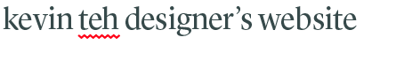

Drop an e-mail and say hello! I look forward to collaborate with you. If you’d like a copy of my resumé, you can click here, or here if you want my PDF portfolio.
Jun—Aug 2017
General Assembly
Sydney, Australia
Web Development
Mar—Apr 2017
Academy Xi
Sydney, Australia
UX Design
2014—2016
Billy Blue College of Design
Sydney, Australia
Bachelor of Comm Design
2011—2013
Methodist College
Kuala Lumpur, Malaysia
A-Level (HSC Equivalent)
April 2017—May 2017
Marque Brand Consultants
Sydney, Australia
Design Intern
May 2016—July 2016
Tiliqua Press
Sydney, Australia
Senior Designer
Aug 2015—Oct 2016
UK & Eire Malaysian Law Students’ Union (KPUM)
Freelance
Sep 2012—July 2014
Methodist College
Kuala Lumpur, Malaysia
Marketing Intern/Designer